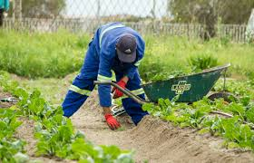
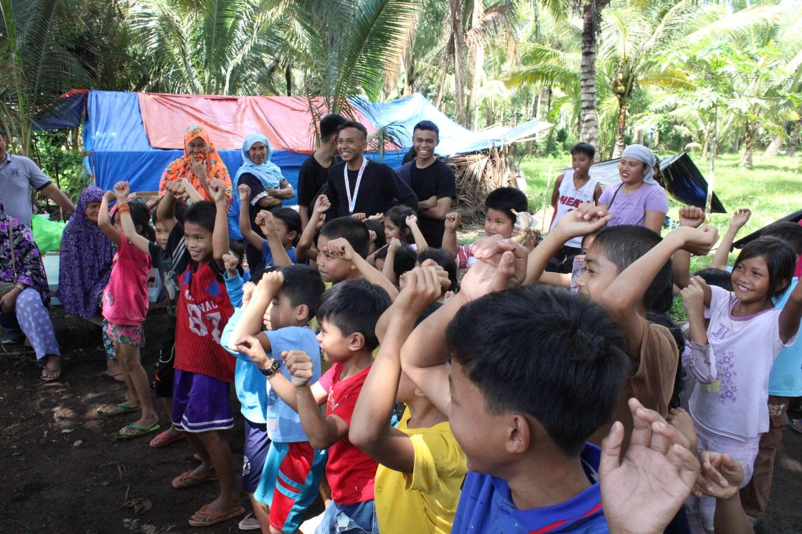
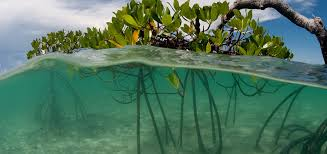
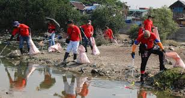
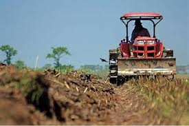
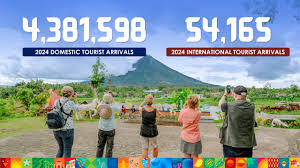

Welcome to Bicolandia Organic Coco Farmers Agricultural Cooperative
We focus on sustainable farming practices to provide quality organic coconut products.
Our Features

Rural and Urban Gardening
We blend traditional and modern gardening practices for better community food sustainability.

Community Engagement and Education
Empowering the community through education on organic farming and sustainable living.

Green Infrastructure Implementation
Using green technologies to enhance farming efficiency and eco-friendliness.

Waste Management and Environmental Stewardship
Recycling, composting, and responsible waste systems to protect the environment.

Local Product Innovation and Development Initiative
Innovating local goods using organic coconut materials and sustainable packaging.

Tourism Promotion Campaign
Promoting agri-tourism to support livelihoods and showcase eco-friendly farming.